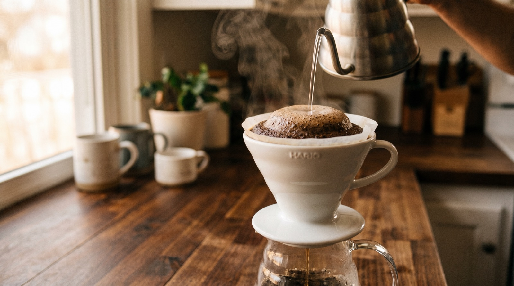
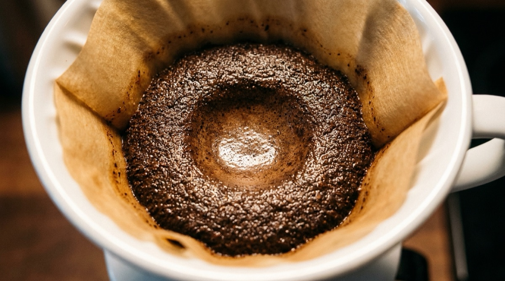

V60 brew guide: ratios, timing, and the variables that matter.

The Hario V60 is the most forgiving demanding brewer we know. It's forgiving because the technique is simple and the gear is cheap; demanding because the cup exposes every mistake. A clean V60 of a good coffee is the best filter brew you'll make at home. A sloppy one is thin, sour, and leaves you wondering why anyone bothers.
This guide gives you a working recipe that produces a reliable cup on the first try, then teaches you the five variables so you can adapt it to any bean. By the end you'll understand why your technique matters more than your filter choice, and how to diagnose a bad cup by what it tastes like.
The baseline recipe
This recipe works for most medium-roast specialty coffees on a standard V60-02 with paper filter. Adjust from here.
- Coffee: 20 g, medium-fine grind (like table salt)
- Water: 320 g total (a 1:16 ratio)
- Water temperature: 94 °C
- Total brew time: 3:00 to 3:30
Pour schedule:
- 0:00 — Bloom. Pour 40 g of water in a tight spiral from the centre. Swirl the V60 gently to saturate all grounds. Wait 40 seconds.
- 0:40 — Pour 1. Pour up to 160 g total (120 g added) in a steady spiral over ~25 seconds. Stop when the scale reads 160.
- 1:10 — Pour 2. Pour up to 240 g total (80 g added) over ~20 seconds.
- 1:45 — Pour 3. Pour up to 320 g total (80 g added) over ~20 seconds.
- 2:05 — Swirl gently. A small circular swirl of the V60 levels the bed for an even drawdown.
- 2:50–3:30 — Drawdown complete. The bed should be flat and "concave" — slightly dished in the centre, no island of grounds on one side.
That's it. Pour into your preheated cup, swirl, wait 30 seconds for it to cool, taste. If it tastes good, log it and repeat the recipe. If it doesn't, the troubleshooting section below walks you through what to adjust.
Five variables you can control
In rough order of how much they affect the cup:
1. Grind size
The biggest lever. Too coarse and water rushes through — thin, sour. Too fine and water pools — bitter, muddy. Medium-fine (fine table salt texture) is the target. Most grinders settle around 18–25 clicks for V60 (1Zpresso), 25–32 (Comandante), 4–7 (Niche). See our grinder settings guide for calibration.
2. Water quality
A criminally under-discussed variable. Very soft water (distilled) under-extracts because there's no mineral content to bind to the coffee's aromatics. Very hard water over-extracts and leaves a chalky finish. Aim for filtered tap water at 50–150 ppm TDS. If your tap water is terrible, a cheap Brita pitcher fixes 80% of the problem.
3. Water temperature
Affects extraction speed. Hotter water extracts more quickly and more aggressively. 94 °C is the sensible default. Go hotter (95–96 °C) for light roasts; cooler (92–93 °C) for dark roasts.
4. Ratio
1:16 is the middle-of-the-road default. Shorter (1:14) gives a stronger cup — more TDS, more body. Longer (1:17 or 1:18) gives a lighter, more tea-like cup. This is a taste-preference dial more than a right/wrong dial.
5. Pour technique
Covered in the next section at length. More important than most people think.
Why pour technique matters most
A great pour with a mediocre grinder beats a mediocre pour with a great grinder.
The reason is uniform extraction. Water only extracts from coffee it's actually touching, and only if the grounds are saturated long enough. A sloppy pour leaves dry patches, creates preferential flow paths, and ends up pulling a lot from some grounds and almost nothing from others. The result: a muddled cup that's simultaneously sour AND bitter, because some of it was over-extracted and some was under-extracted.
Three pour-technique principles that fix most beginner cups:
Pour slowly and from low
Hold the kettle 2–3 cm above the coffee bed. A high pour introduces air and agitates the bed unevenly. A low, slow pour saturates gently.
Spiral inward, never outward
Start from the centre, spiral outward to about 1 cm from the filter edge, then spiral back to the centre. Never pour on the paper filter directly — water that contacts the filter bypasses the coffee bed entirely.
Maintain consistent flow rate
Each of the three main pours should take roughly 20–25 seconds. If you're finishing in 10 seconds, you're dumping water too fast. If it's taking 45 seconds per pour, your bed will have dried out between additions.

Troubleshooting by taste
What the cup tells you:
- Sour / thin / citric-sharp. Under-extraction. Grind finer; or add 1–2 °C to your water; or pour slower.
- Bitter / drying / astringent. Over-extraction. Grind coarser; or drop 1–2 °C; or check your brew time hasn't blown out past 4 minutes.
- Hollow / watery / no middle notes. Water quality problem. Try bottled spring water as a test. If the hollow flavour disappears, fix your home water.
- Muddled / confused flavour profile. Uneven extraction, almost always a pour technique problem. Watch a video of a pro pour, then record yourself pouring and compare.
- Sludgy bottom / fines in the cup. Grind is producing too many fines (common with blade grinders and some low-end burr grinders). Also check that your filter paper is properly seated.
Adjusting for roast level
The baseline recipe assumes a medium roast. Tweaks for other roasts:
| Roast level | Grind | Temp | Ratio | Notes |
|---|---|---|---|---|
| Light | Finer by 2–3 clicks | 96 °C | 1:15 to 1:16 | Dense, hard to extract. Longer bloom (50–60 s) helps. |
| Medium-light | Baseline | 94–95 °C | 1:16 | The default assumption. |
| Medium | Baseline | 93–94 °C | 1:16 | Very forgiving — starts tasting great fast. |
| Medium-dark | Coarser by 1–2 clicks | 92–93 °C | 1:16 to 1:17 | Avoid over-extraction and bitterness. |
| Dark | Coarser by 3–4 clicks | 90–92 °C | 1:17 | Short contact time; single-pour technique often better. |
Kit that's worth it (and what isn't)
Essential:
- V60-02 ceramic or plastic dripper. Both work. Plastic retains heat better; ceramic feels nicer.
- Genuine Hario filters. Bleached white tabbed. Generic brands often tear or have a thinner weave that accelerates drawdown.
- Gooseneck kettle. Ideally temperature-controlled. A Fellow Stagg EKG or Brewista Artisan — cheaper alternatives exist but temperature control matters.
- A scale that displays time and weight simultaneously. Any 0.1 g brew scale does this. Acaia is the premium; Timemore and Felicita do it for less money.
- A decent grinder. 1Zpresso J-Max or Q2 for hand grinders; Baratza Encore ESP or Fellow Ode for electric.
Overrated / not worth it:
- Metal V60 filters. Let too many fines through; the cup is muddy. Paper is better.
- Distilled water or "coffee water" kits. For 95% of brewers, a Brita pitcher does the job for $30 instead of $300.
- Expensive decanters. A sensibly-priced glass or ceramic vessel works identically. The cute glass server is optional.
Log every V60. Learn from the pattern.
Extraction supports V60 natively with phase timings, scale integration, and a weekly AI insight that tells you what's working and what isn't. Free trial.
Download on the App StoreFrequently asked questions
1:15 to 1:17. A working default is 20 g coffee, 320 g water (1:16). Shorter ratios give a stronger cup; longer give a lighter one.
Bleached. Unbleached filters impart a subtle papery flavour that needs extra rinsing. Both work, but bleached is the specialty-coffee default.
Under-extraction. Grind finer by one click, or try 1–2 °C hotter water, or slow down your pour. Sourness almost always means the water didn't spend enough time pulling the sweet compounds out.
3:00 to 3:30 for 20 g with 320 g of water. Shorter means the grind is too coarse; longer means too fine or your filter is clogged. Time is a check, not a target.